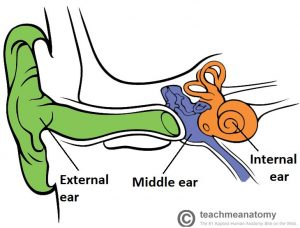
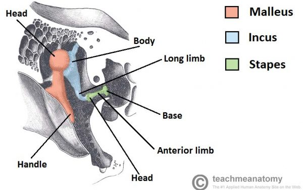
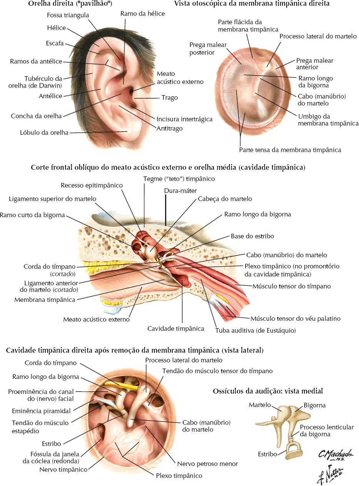
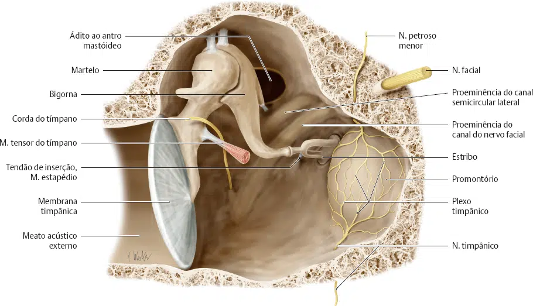
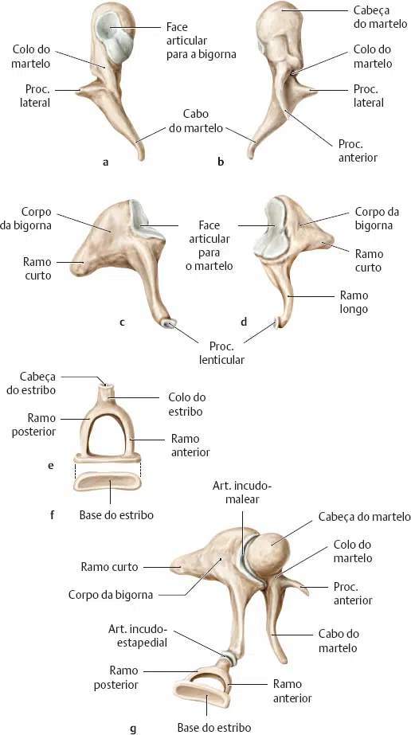

Três pequenos pares de ossos, chamados ossículos da audição, estão localizados no interior da cavidade da orelha média na parte petrosa do osso temporal.
De fora para dentro são: martelo, bigorna e estribo.
Seus movimentos transmitem impulsos sonoros através da cavidade da orelha média.


As vibrações são selecionadas, primeiro, pelo martelo, que está ligado diretamente à superfície interior da membrana timpânica.
A cabeça do martelo se articula com o ossículo central, a bigorna, assim nomeada por causa de uma suposta semelhança com uma bigorna, sendo que, na verdade, parece-se mais com um dente pré-molar, com um corpo e duas raízes.
As vibrações sonoras causam um movimento na membrana timpânica que, então, cria movimento ou oscilação nos ossículos auditivos.
Este movimento ajuda a transmitir as ondas sonoras da membrana timpânica da orelha externa para a janela oval da orelha interna.

O martelo é o maior e mais lateral dos ossos da orelha média, fixando-se à membrana timpânica, através do cabo do martelo.
A cabeça do martelo localiza-se no recesso epitimpânico, onde se articula com o próximo ossículo auditivo, a bigorna.
O osso seguinte, a bigorna, consiste de um corpo e dois membros.
O corpo se articula com o martelo, o membro curto se liga à parede posterior do meio e o membro longo se une ao último dos ossículos; o estribo.
O estribo é o menor osso do corpo humano.
A base do estribo é ligada a outra membrana, denominada janela oval, que leva para a orelha interna.
É em forma de estribo, com uma cabeça, dois membros e uma base.
A cabeça se articula com a bigorna e a base se une à janela oval.

